The objective of this module is to discuss the use of simple linear regression to explore the relationship among two continuous variables: a single predictor variable and a single response variable.
Install and load the following package in R: {broom}
Load {tidyverse}, {manipulate}, {patchwork}, and {infer}
18.3 Covariance and Correlation
So far, we have looked principally at single variables, but one of the main things we are often interested in is the relationships among two or more variables. Regression modeling is one of the most powerful and important set of tools for looking at relationships among more than one variable. With our zombie apocalypse survivors dataset, we started to do this using simple bivariate scatterplots… let’s look at those data again and do a simple bivariate plot of height by weight.
f <-"https://raw.githubusercontent.com/difiore/ada-datasets/main/zombies.csv"d <-read_csv(f, col_names =TRUE)head(d)
## # A tibble: 6 × 10
## id first_name last_name gender height weight zombies_killed
## <dbl> <chr> <chr> <chr> <dbl> <dbl> <dbl>
## 1 1 Sarah Little Female 62.9 132. 2
## 2 2 Mark Duncan Male 67.8 146. 5
## 3 3 Brandon Perez Male 72.1 153. 1
## 4 4 Roger Coleman Male 66.8 130. 5
## 5 5 Tammy Powell Female 64.7 132. 4
## 6 6 Anthony Green Male 71.2 153. 1
## # ℹ 3 more variables: years_of_education <dbl>, major <chr>, age <dbl>
plot(data = d, height ~ weight)
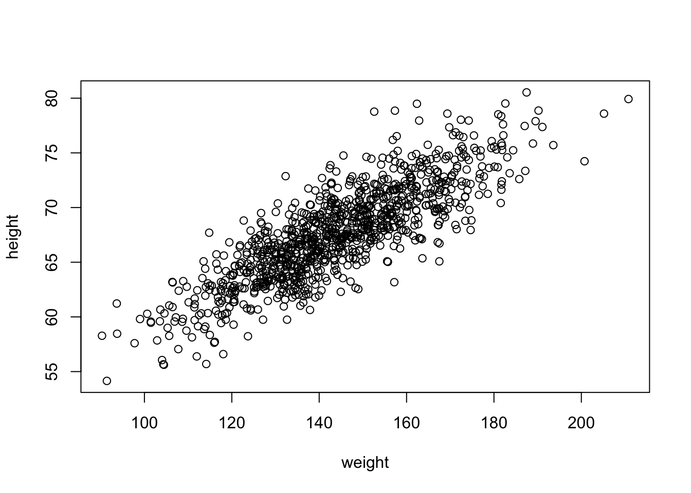
These variables clearly seem to be related to one another, in that as weight increases, height increases. There are a couple of different ways we can quantify the relationship between these variables. One is by calculating the covariance, which expresses how much two numeric variables “change together” and whether that change is positive or negative.
Recall that the variance in a variable is simply the sum of the squared deviatiations of each observation from the mean divided by sample size (n for population variance or n-1 for sample variance). Thus, sample variance is:
\[var(x)=\sum\frac{(x-\bar{x})^2}{(n-1)}\]
Similarly, the covariance is simply the product of the deviations of each of two variables from their respective means divided by sample size. Thus, for two vectors, \(x\) and \(y\), each of length \(n\), representing two variables describing a sample…
What is the covariance between zombie apocalypse survivor weight and zombie apocalypse survivor height? What does it mean if the covariance is positive versus negative? Does it matter if you switch the order of the two variables?
Show Code
w <- d$weighth <- d$heightn <-length(w) # or length(h)cov_wh <-sum((w -mean(w)) * (h -mean(h)))/(n -1)cov_wh
Show Output
## [1] 66.03314
The built-in R function cov() yields the same.
cov(w, h)
## [1] 66.03314
We often describe the relationship between two variables using the correlation coefficient, which is a standardized form of the covariance that summarizes, on a scale from -1 to +1, both the strength and direction of a relationship. The correlation is simply the covariance divided by the product of the standard deviations of the two variables.
\[cor(x,y)=\frac{cov(x,y)}{sd(x)sd(y)}\]
CHALLENGE
Calculate the correlation between zombie apocalypse survivor weight and zombie apocalypse survivor height.
Again, there is a built-in R function cor() which yields the same.
cor(w, h)
## [1] 0.8325862
cor(w, h, method ="pearson")
## [1] 0.8325862
This formulation of the correlation coefficient is referred to as Pearson’s product-moment correlation coefficient and is often abbreviated as \(\rho\).
There are other, nonparametric forms of the correlation coefficient we might also calculate, which are based on the relationship among rank scores for the two variables:
cor(w, h, method ="kendall")
## [1] 0.6331932
cor(w, h, method ="spearman")
## [1] 0.82668
18.4 Regression
Regression refers to a set of tools that lets us explore the relationships between variables further. In regression analysis, we are typically identifying and exploring linear models, or functions, that describe the relationship between variables. There are a couple of main purposes for undertaking regression analyses:
To use one or more variables to predict the value of another
To develop and choose among different models of the relationship between variables
To do analyses of covariation among sets of variables to identify/explore their relative explanatory power
The general purpose of linear regression is to come up with a model or function that estimates the expected value of one variable (a mean, a proportion, etc.), i.e., the response or outcome variable, given the particular value(s) of another variable (or set of variables), i.e., the predictor variable(s).
We are going to start off with simple bivariate regression, where we have a single predictor and a single response variable. In our case, we may be interested in coming up with a model that estimates the expected value for zombie apocalypse survivor height (as the response variable) given zombie apocalypse survivor weight (as the predictor variable). That is, we want to explore possible functions that link these two variables and choose the best one.
In general, the model for linear regression represents a dependent (or response) variable, \(Y\) as a linear function of an independent (or predictor) variable, \(X\).
\[Y_i = \beta_0 + \beta_1 X_i + \epsilon_i\]
The function has two coefficients. The first, \(\beta_0\) is the intercept, i.e., the value of \(Y\) when \(X\) = 0. The second \(\beta_1\) is the slope of the line describing the relationship between the predictor and response. The error term, \(\epsilon_i\), is a normal random variable, \(\epsilon_i \sim N(0,\sigma^2)\), with the standard deviation assumed to be constant across all values of \(X\). A regression analysis calls for estimating the values of all three parameters (\(\beta_0\), \(\beta_1\), and the residual or error term). How this is accomplished will depend on what assumptions are employed in the analysis.
Looking at our scatterplot above, it seems pretty clear that there is indeed some linear relationship among these variables, and so a reasonable function to connect height to weight should simply be some kind of line of best fit. Recall that the general formula for a line is:
\[\hat{y} = slope \times x + intercept\]
where \(\hat{y}\) = our predicted (or expected, or mean) value for y given a particular value of x.
In regression parlance…
\[\hat{y_i} = \beta_1x_i + \beta_0\]
Here, \(\beta_1\) and \(\beta_0\) are referred to as the regression coefficients, and it is those coefficients that our regression analysis is trying to estimate, while minimizing, according to some criterion, the error term. This process of estimation is called “fitting the model.”
18.4.1 Ordinary Least Squares (OLS)
A typical linear regression analysis further assumes that \(X\), our “independent” or predictor variable, is controlled and thus measured with much greater precision than \(Y\), our “dependent” or response variable. Thus the error, \(\epsilon_i\) is assumed to be restricted to the \(Y\) dimension, with little or no error in measuring \(X\), and we employ “ordinary least squares” as our criterion for best fit.
What does this mean? Well, we can imagine a family of lines with different slope (\(\beta_1\)) and intercept (\(\beta_0\)) going through any cloud of points, and one “best fit” criterion we could use is to find the line whose coefficients (\(\beta_1\) and \(\beta_0\), or slope and intercept) minimize the sum of the squared deviations of each observation in the \(Y\) direction from that predicted by the line. This is the basis of ordinary least squares or OLS regression. We want to wind up with an equation that tells us how \(Y\) varies in response to changes in \(X\).
In other words, we want to find \(\beta_1\) and \(\beta_0\) that minimizes…
\[\sum(y_i-\hat{y})^2\]
or, equivalently,
\[\sum(y_i-(\beta_1 x_i + \beta_0))^2\]
In terms of our variables, this is…
\[\sum(height - (\beta_1 weight + \beta_0))^2\]
Let’s first fit such a model by hand… The first thing to do is estimate the slope, which we can do if we first “center” each of our variables by subtracting the mean from each value (essentially, this shifts the distribution to eliminate the intercept term).
We can also calculate estimates for the standard errors in our regression coefficients analytically as follows:
\[SE_{\beta_1} = \sqrt\frac{\sum\epsilon_i^2}{(n-2)\sum(x_i -\bar{x})^2} = \sqrt\frac{\sum(\hat{y_i}-\bar{y})^2}{(n-2)\sum(x_i -\bar{x})^2}\]\[SE_{\beta_0} = SE_{\beta_1}\sqrt\frac{\sum{x_i}^2}{n}\] As for any standard errors, these are estimates of the standard deviation in the sampling distribution of the two regression coefficients.
CHALLENGE
Solve for \(\beta_1\) by hand…
Show Code
(beta1 <-cor(w, h) * (sd(h)/sd(w)))
Show Output
## [1] 0.1950187
Show Code
(beta1 <-cov(w, h)/var(w))
Show Output
## [1] 0.1950187
Show Code
(beta1 <-sum((h -mean(h)) * (w -mean(w)))/sum((w -mean(w))^2))
Show Output
## [1] 0.1950187
Then, to find \(\beta_0\), we can simply plug back into our original regression model. The line of best fit has to run through the centroid of our data points, which is the point determined by the mean of the \(X\) values and the mean of the \(Y\) values, so we can use the following:
\[\bar{y}=\beta_1\bar{x}+\beta_0\]
which, rearranged to solve for \(\beta_0\) gives…
\[\beta_0=\bar{y}-\beta_1\bar{x}\]
CHALLENGE
Solve for \(\beta_0\) by hand…
(beta0 <-mean(h) - beta1 *mean(w))
## [1] 39.56545
Note that in the example above, we have taken our least squares criterion to mean minimizing the deviation of each of our \(Y\) variables from a line of best fit in a dimension perpendicular to the \(Y\) axis. In general, this kind of regression - where deviation is measured perpendicular to one of the axes - is known as Model I regression, and is used when the levels of the predictor variable are either measured without error (or, practically speaking, are measured with much less uncertainty than those of the response variable) or are set by the researcher (e.g., for defined treatment variables in an ecological experiment).
18.4.2 The lm() Function
The function lm() (“linear model”) in R makes all of the calculations we did above for Model I regression very easy! Below, we pass the zombies dataframe (d) and variables directly to lm() and assign the result to an R object called m. We can then look at the various elements that R calculates about this model.
In {ggplot}, we can easily create a plot that adds the linear model along with confidence intervals around the estimated value of y, or \(\hat{y}\) at each x by calling geom_smooth() with the argument method= specified as “lm”. Those intervals are important for when we move on to talking about inference in the regression context.
g <-ggplot(data = d, aes(x = weight, y = height))g <- g +geom_point()g <- g +geom_smooth(method ="lm", formula = y ~ x)g
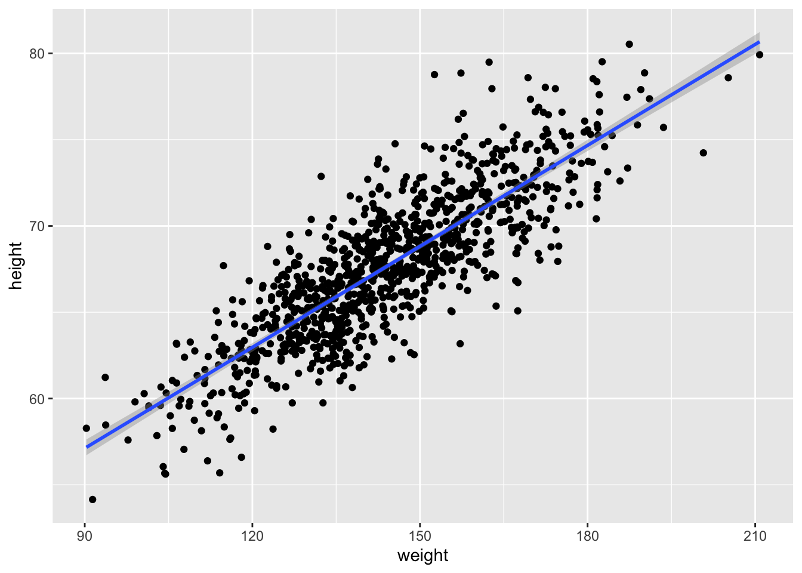
18.4.3 Alternatives to OLS
The assumption of greater uncertainty in our response variable than in our predictor variable may be reasonable in controlled experiments, but for natural observations, measurement of the \(X\) variable also typically involves some error and, in fact, in many cases we may not be concered about PREDICTING \(Y\) from \(X\) but rather want to treat both \(X\) and \(Y\) as independent variables and explore the relationship between them or consider that both are dependent on some additional parameter, which may be unknown. That is, both are measured rather than “controlled” and both include uncertainty. We thus are not seeking an equation of how \(Y\) varies with changes in \(X\), but rather we are look for how they both co-vary in response to some other variable or process. Under these conditions Model II regression analysis may be more appropriate. In Model II approaches, a line of best fit is chosen that minimizes in some way the direct distance of each point to the best fit line. There are several different types of Model II regression, and which to use depends upon the specifics of the case. Common approaches are know as major axis, ranged major axis, and reduced major axis (a.k.a. standard major axis) regression.
The {lmodel2} package allows us to do Model II regression easily (as well as Model I). In this package, the signficance of the regression coefficients, which we discuss below, is determined based on permutation.
library(lmodel2) # load the lmodel2 package# Run the regressionmII <-lmodel2(height ~ weight, data = d, range.y ="relative", range.x ="relative",nperm =1000)mII
##
## Model II regression
##
## Call: lmodel2(formula = height ~ weight, data = d, range.y =
## "relative", range.x = "relative", nperm = 1000)
##
## n = 1000 r = 0.8325862 r-square = 0.6931998
## Parametric P-values: 2-tailed = 2.646279e-258 1-tailed = 1.32314e-258
## Angle between the two OLS regression lines = 4.677707 degrees
##
## Permutation tests of OLS, MA, RMA slopes: 1-tailed, tail corresponding to sign
## A permutation test of r is equivalent to a permutation test of the OLS slope
## P-perm for SMA = NA because the SMA slope cannot be tested
##
## Regression results
## Method Intercept Slope Angle (degrees) P-perm (1-tailed)
## 1 OLS 39.56545 0.1950187 11.03524 0.000999001
## 2 MA 39.10314 0.1982313 11.21246 0.000999001
## 3 SMA 33.92229 0.2342325 13.18287 NA
## 4 RMA 36.80125 0.2142269 12.09153 0.000999001
##
## Confidence intervals
## Method 2.5%-Intercept 97.5%-Intercept 2.5%-Slope 97.5%-Slope
## 1 OLS 38.39625 40.73464 0.1869597 0.2030778
## 2 MA 37.92239 40.28020 0.1900520 0.2064362
## 3 SMA 32.74259 35.06211 0.2263120 0.2424301
## 4 RMA 35.51434 38.06296 0.2054593 0.2231695
##
## Eigenvalues: 351.6888 5.48735
##
## H statistic used for computing C.I. of MA: 6.212738e-05
Note that, here, running lmodel2() and using OLS to detemine the best coefficients yields equivalent results to our Model I regression done above using lm().
mI <-lm(height ~ weight, data = d)summary(mI) # show lm() results
##
## Call:
## lm(formula = height ~ weight, data = d)
##
## Residuals:
## Min 1Q Median 3Q Max
## -7.1519 -1.5206 -0.0535 1.5167 9.4439
##
## Coefficients:
## Estimate Std. Error t value Pr(>|t|)
## (Intercept) 39.565446 0.595815 66.41 <2e-16 ***
## weight 0.195019 0.004107 47.49 <2e-16 ***
## ---
## Signif. codes: 0 '***' 0.001 '**' 0.01 '*' 0.05 '.' 0.1 ' ' 1
##
## Residual standard error: 2.389 on 998 degrees of freedom
## Multiple R-squared: 0.6932, Adjusted R-squared: 0.6929
## F-statistic: 2255 on 1 and 998 DF, p-value: < 2.2e-16
# show lmodel2() OLS resultsfilter(mII$regression.results, Method =="OLS")
Once we have our linear model and associated regression coefficients, we want to know a bit more about the model. First, we want to be able to evaluate whether there is statistical evidence that there is indeed a relationship between these variables. If so, then our regression coefficients can indeed allow us to estimate or predict the value of one variable given another. Additionally, we also would like to be able to extend our estimates from our sample out to the population they are drawn from. These next steps involve the process of statistical inference.
The output of the lm() function provides a lot of information useful for inference. Run the command summary() on the output of lm(data = d, height ~ weight)
m <-lm(data = d, height ~ weight)summary(m)
##
## Call:
## lm(formula = height ~ weight, data = d)
##
## Residuals:
## Min 1Q Median 3Q Max
## -7.1519 -1.5206 -0.0535 1.5167 9.4439
##
## Coefficients:
## Estimate Std. Error t value Pr(>|t|)
## (Intercept) 39.565446 0.595815 66.41 <2e-16 ***
## weight 0.195019 0.004107 47.49 <2e-16 ***
## ---
## Signif. codes: 0 '***' 0.001 '**' 0.01 '*' 0.05 '.' 0.1 ' ' 1
##
## Residual standard error: 2.389 on 998 degrees of freedom
## Multiple R-squared: 0.6932, Adjusted R-squared: 0.6929
## F-statistic: 2255 on 1 and 998 DF, p-value: < 2.2e-16
One of the outputs for the model, seen in the 2nd to last line in the output above, is the “R-squared” value, or the coefficient of determination, which is a summary of the total amount of variation in the y variable that is explained by the x variable. In our regression, ~69% of the variation in zombie height is explained by zombie weight.
Another output is the standard error of the estimate of each regression coefficient, along with a corresponding t value and p value. Recall that t statistics are calculated as the difference between an observed and expected value divided by a standard error. The p value comes from evaluating the magnitude of the t statistic against a t distribution with n-2 degrees of freedom. That is, we can calculate p values mathematically for our statistics (the regression slope and intercept) if the sampling distribution of these statistics conform to a t distribution.
As we saw above, running the tidy() function from the {broom} package pulls out a clean table of the relevant information.
m.summary <-tidy(m)
We can confirm the t statistic and p value output by lm() by hand by calculating t and p based on the regression coefficient estimates and the standard errors of those estimates. The t statistic is simply the value of the estimated regression coefficient divided by the estimate of the standard error for that coefficient (i.e., \(\beta/SE_\beta\))
m.summary$calc.statistic <- (m.summary$estimate -0)/m.summary$std.errorm.summary$calc.p.value <-2*pt(m.summary$calc.statistic, df =nrow(d) -2, lower.tail =FALSE)# we use 2 * pt to get the 2-tailed p value alternatively, we could do...# m.summary$calc.p.value <- pt(-1*abs(m.summary$calc.statistic), df = nrow(d) -# 2, lower.tail = TRUE) + pt(abs(m.summary$calc.statistic), df = nrow(d) - 2,# lower.tail = FALSE) or m.summary$calc.p.value <-# pt(-1*abs(m.summary$calc.statistic), df = nrow(d) - 2, lower.tail = TRUE) +# (1-pt(abs(m.summary$calc.statistic), df = nrow(d) - 2, lower.tail = TRUE))m.summary
We can get t distribution-based confidence intervals for our estimates easily, too, using either the by-hand approach we’ve used before or by using a built-in function.
alpha <-0.05# extract CIs from the model with using the results of lm()(CI <-confint(m, level =1- alpha))
NOTE: Remember that these mathematical methods of calculating p values and CIs are only valid if the LINE technical conditions for linear regression are met. These conditions are:
Linearity of the relationship between the explanatory and response variables
Independence of observations and their residuals
Normality of the residual values of the response variable around the regression line
Equality of the variance in residual values across the range of explanatory variable values
Simulation-Based Inference
Significance of Coefficients by Permutation
As we saw in Module 16, the {infer} package offers a convenient set of functions and a standard workflow for using permutation methods for statistical hypothesis testing, rather than relying on mathematical assumptions. In that module, we considered whether means, differences between means, proportions, or differences in proportions differed from what we would expect under a particular null hypothesis… and we can apply the same workflow to evaluating regression coefficients! The permutation approach lets us relax the normality condition of the LINE assumptions for linear regression. To demonstrate this process, we will run the same model of height ~ weight using the zombie apocalypse survivors dataset that we ran above:
First, we run the model and pull out \(\beta_1\), the regression slope, and its estimated standard error:
# first define alpha, CI boundaries, and critical valuesalpha <-0.05confidence_level <-1- alphap_lower <- alpha/2p_upper <-1- (alpha/2)degrees_of_freedom <-nrow(d) -2critical_value <-qt(p_upper, df = degrees_of_freedom)# original slopeoriginal.slope <-lm(data = d, height ~ weight) |># tidy the model and add the CI based on the t distributiontidy(conf.int =TRUE, conf.level = confidence_level) |># or manually calculate the CI based on the t distributionmutate(lower = estimate - std.error * critical_value, upper = estimate + std.error * critical_value) |>filter(term =="weight")original.slope # show model results for slope of weight
We can generate a null distribution for our slope estimates via permutation using {infer} package functions… essentially, each permutation involves randomly shuffling values of the response variable under the null hypothesis such that they are independent of the explanatory variable (and vice versa).
permuted.slope <- d |># specify modelspecify(height ~ weight) |># use a null hypothesis of independencehypothesize(null ="independence") |># generate permutation replicatesgenerate(reps =1000, type ="permute") |># calculate the slope statisticcalculate(stat ="slope")head(permuted.slope) # slopes from first few permutation replicates
# create confidence intervalspermuted.slope.summary <- permuted.slope |># summarize the mean (which should be very close to zero), standard error,# CI based on the SE and t distribution, and CI based on the quantile# (percentile) methodsummarize(estimate =mean(stat), std.error =sd(stat), lower = estimate - std.error * critical_value, upper = estimate + std.error * critical_value, perm.lower =quantile(stat, p_lower), perm.upper =quantile(stat, p_upper))# show summary of permuted sampling distributionpermuted.slope.summary
The get_ci() function from {infer} can be used to return these different types of confidence intervals, too… i.e., either based on the standard error of the permutation distribution or actual quantiles from that distribution.
get_ci(permuted.slope, level =1- alpha, type ="percentile")
We can also visualize the null distribution of slope coefficients based on permutation and superimpose our actual slope coefficient.
# plot the null distribution based on permutationhist(permuted.slope$stat, main ="Histogram of Permuted\nSlope Values", xlab ="Slope Coefficient")
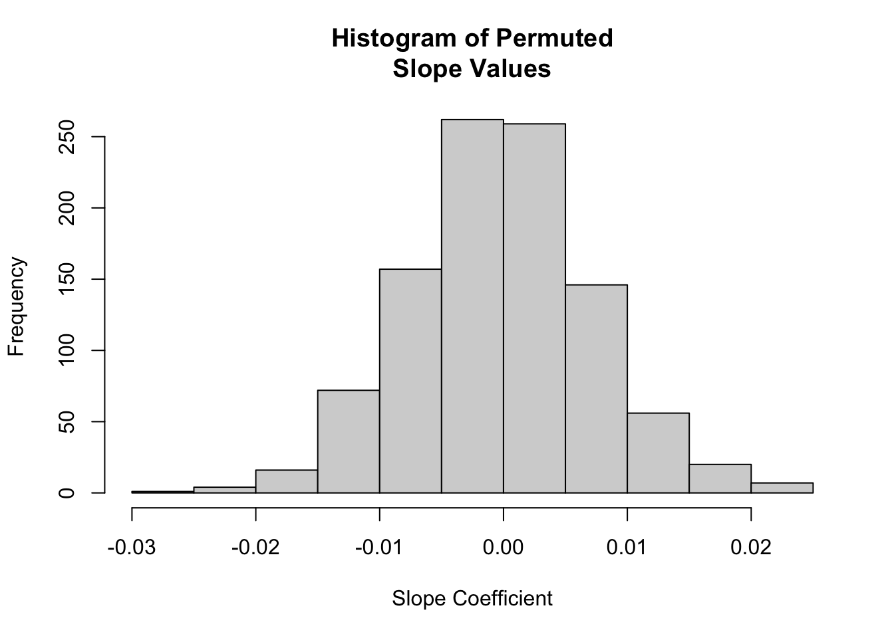
# or using `visualize()` from {infer}visualize(permuted.slope) +shade_p_value(obs_stat = original.slope$estimate, direction ="two_sided")
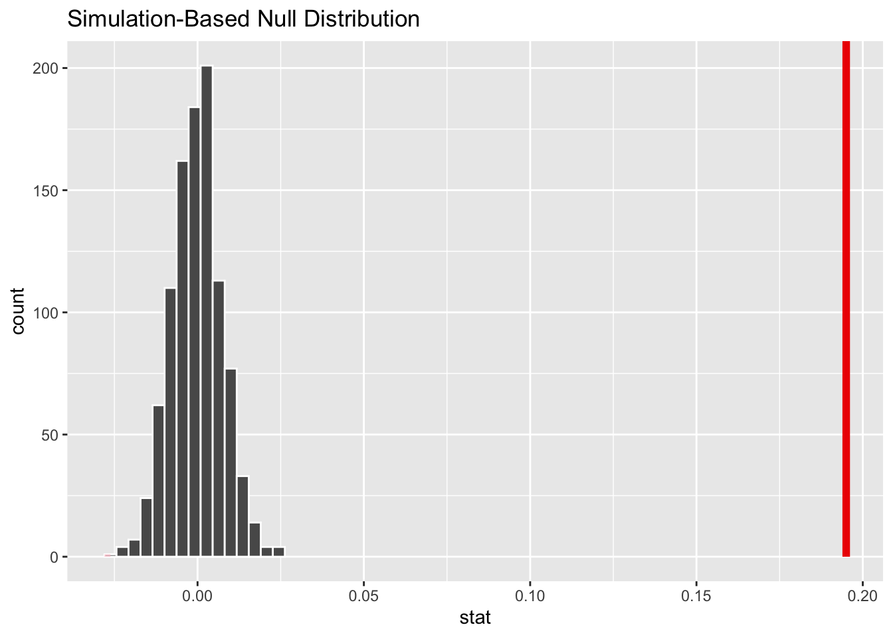
Finally, to determine the two-sided p value associated with our observed slope coefficient, we determine the proportion of permuted simulations that yielded a slope estimate as great or greater than the the one based on our original data:
p.value <- permuted.slope |># add a column of the absolute value of the slopemutate(abs_stat =abs(stat)) |># calculate a summary statistic as the proportion of cases where the# absolute value of the permuted slope is greater than or equal to the# absolute value of the observed slopesummarize(estimate =mean(abs_stat >=abs(pull(original.slope, estimate))))p.value
## # A tibble: 1 × 1
## estimate
## <dbl>
## 1 0
# the function `get_p_value()` returns this value directly...(p.value <- permuted.slope |>get_p_value(obs_stat = original.slope$estimate, direction ="two_sided"))
## Warning: Please be cautious in reporting a p-value of 0. This result is an approximation
## based on the number of `reps` chosen in the `generate()` step.
## ℹ See `get_p_value()` (`?infer::get_p_value()`) for more information.
## # A tibble: 1 × 1
## p_value
## <dbl>
## 1 0
CIs for Coefficients by Bootstrapping
We can also use the {infer} package to generate CIs around our regression coefficient estimates using bootstrapping.
boot.slope <- d |># specify modelspecify(height ~ weight) |># generate bootstrap replicatesgenerate(reps =1000, type ="bootstrap") |># calculate the slope statisticcalculate(stat ="slope")head(boot.slope) # slopes from first few bootstrap replicates
# create confidence intervals for regression coefficientsboot.slope.summary <- boot.slope |># summarize the mean, standard error, CI based on the SE and t# distribution, and CI based on the quantile (percentile) methodsummarize(estimate =mean(stat), std.error =sd(stat), lower = estimate - std.error * critical_value, upper = estimate + std.error * critical_value, boot.lower =quantile(stat, p_lower), boot.upper =quantile(stat, p_upper))# show summary of bootstrap sampling distributionboot.slope.summary
Again, the get_ci() function from {infer} can be used to return these different types of confidence intervals…
CI.percentile <-get_ci(boot.slope, level =1- alpha, type ="percentile")CI.theory <-get_ci(boot.slope, level =1- alpha, type ="se", point_estimate =pull(boot.slope.summary, estimate))
We can also easily visualize the sampling distribution (and CI) based on bootstrapping.
# plot the sampling distribution for based on bootstrapping plus a CIhist(boot.slope$stat, main ="Histogram of Bootstrapped\nSlope Values", xlab ="Slope Coefficient")abline(v = CI.percentile)
As shown above, estimating our regression coefficients is pretty straightforward. But what do they mean? How do we interpret them?
The intercept, \(\beta_0\), is the PREDICTED value of \(y\), our response variable, when the value of \(x\), our explanatory variable, is zero.
The slope, \(\beta_1\) is EXPECTED CHANGE in units of \(y\) for every 1 unit of change in \(x\).
The overall equation allows us to calculate PREDICTED values of \(y\) for new observations of \(x\). We can also calculate CONFIDENCE INTERVALS (CIs) around the predicted mean value of \(y\) for each value of \(x\) (which addresses our uncertainly in the estimate of the mean), and we can get PREDICTION INTERVALS (PIs) around our prediction (which gives the range of actual values of \(y\) that we might expect to see at a given value of \(x\)). That is, for each value of \(x\), we can calculate a CI, which is the the range of values into which \(\hat{y}\) is expected to fall 95% of the time, and a PI, which is the range of y values into which 95% of predicted individual y values are expected to fall.
CHALLENGE
If zombie apocalypse survivor weight is measured in pounds and zombie apocalypse survivor height is measured in inches, what is the expected height of a survivor weighing 150 pounds?
The predict() function allows us to generate predicted (i.e., \(\hat{y}\)) values for a vector of values of x. Note the structure of the 2nd argument in the function, newdata=… it has to be a data frame and include the variable name(s) we are going to use to predict y on the basis of. Here, we pass it a vector of actual x values.
The augment() function from {broom} also generates comparable predicted or “fitted” values for a model. With default arguments, it generates .fitted and .resid values for the original data and can also calculate .se.fit values (standard errors around the fitted values) by setting se_fit=TRUE (it is FALSE by default). With the newdata= argument, it generates .fitted values for novel data. As for predict(), the newdata= argument has to be a data frame and include the predictor variable name(s).
g <-ggplot(data = df, aes(x = weight, y = .fitted))g <- g +geom_point(size =0.25)g <- g +geom_point(aes(x = weight, y = height), color ="red")g <- g +geom_segment(aes(x = weight, y = .fitted, xend = weight, yend = height),alpha =0.25)g
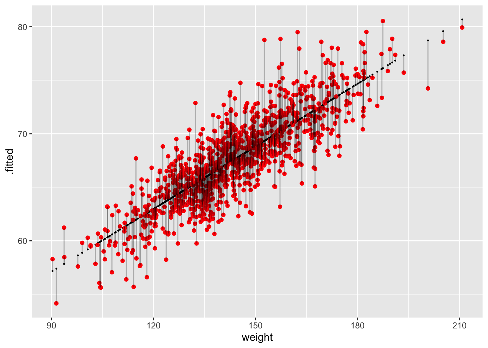
Each vertical line in the figure above represents a residual, the difference between the observed and the fitted or predicted value of \(y\) (\(\hat{y}\)) at the given \(x\) value.
Confidence Intervals around Predicted Means
The predict() function also allows us to easily generate confidence intervals around our predicted \(\hat{y}\) values.
ci <-predict(m, newdata =data.frame(weight =150), interval ="confidence", level =1- alpha) # for a single valueci
## fit lwr upr
## 1 68.81825 68.66211 68.9744
ci <-predict(m, newdata =data.frame(weight = d$weight), interval ="confidence",level =1- alpha) # for a vector of valuesci <-data.frame(ci)ci <-cbind(df$weight, ci)names(ci) <-c("weight", "c.fit", "c.lwr", "c.upr")g <-ggplot(data = df, aes(x = weight, y = height))g <- g +geom_point(alpha =0.5)g <- g +geom_line(data = ci, aes(x = weight, y = c.fit), color ="black")g <- g +geom_line(data = ci, aes(x = weight, y = c.lwr), color ="blue")g <- g +geom_line(data = ci, aes(x = weight, y = c.upr), color ="blue")g
This can be also be done by hand using the data from the augment()ed model:
df <- df |># calculate a confidence interval for the predicted valuesmutate(c.lwr = .fitted -qt(1- alpha/2, nrow(df) -2) * .se.fit, c.upr = .fitted +qt(1- alpha/2, nrow(df) -2) * .se.fit)head(df)
g <-ggplot(data = df, aes(x = weight, y = height))g <- g +geom_point(alpha =0.5)g <- g +geom_line(aes(x = weight, y = .fitted), color ="black")g <- g +geom_line(aes(x = weight, y = c.lwr), color ="blue")g <- g +geom_line(aes(x = weight, y = c.upr), color ="blue")g
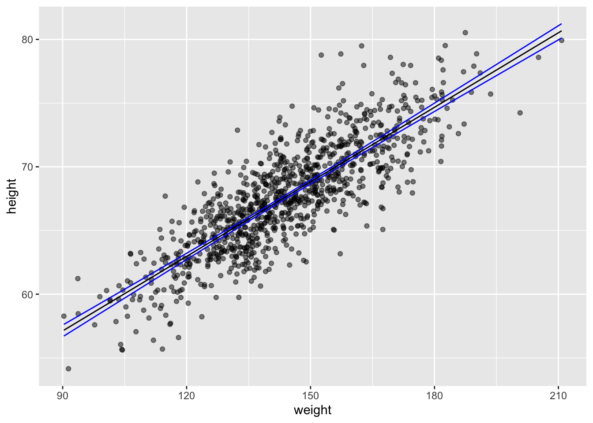
Prediction Intervals for Individual Responses
The predict() function also allows us to easily generate prediction intervals for the range of possible values of individual observations of \(y\) (rather than the 95% CI around \(\hat{y}\) at each \(x\).
pi <-predict(m, newdata =data.frame(weight =150), interval ="prediction", level =0.95) # for a single valuepi
## fit lwr upr
## 1 68.81825 64.12849 73.50802
pi <-predict(m, newdata =data.frame(weight = d$weight), interval ="prediction",level =0.95) # for a vector of valuespi <-data.frame(pi)pi <-cbind(d$weight, pi)names(pi) <-c("weight", "p.fit", "p.lwr", "p.upr")g <- g +geom_line(data = pi, aes(x = weight, y = p.lwr), color ="red")g <- g +geom_line(data = pi, aes(x = weight, y = p.upr), color ="red")g
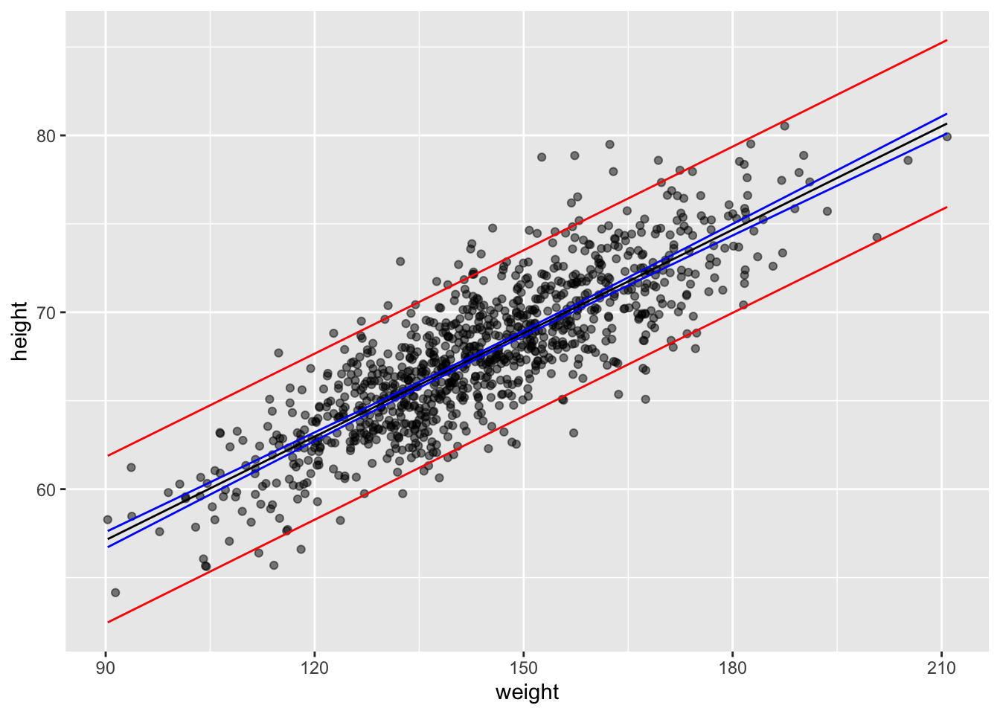
Again, this can be also be done by hand using the data from the augment()ed model:
sd <-glance(m) |>pull(sigma) # sd deviation of residualsdf <- df |># calculate a confidence interval for the predicted valuesmutate(se.prediction =sqrt(sd^2+ .se.fit^2), p.lower = .fitted -qt(1- alpha/2,nrow(df) -2) * se.prediction, p.upper = .fitted +qt(1- alpha/2, nrow(df) -2) * se.prediction)g <-ggplot(data = df, aes(x = weight, y = height))g <- g +geom_point(alpha =0.5)g <- g +geom_line(aes(x = weight, y = .fitted), color ="black")g <- g +geom_line(aes(x = weight, y = c.lwr), color ="blue")g <- g +geom_line(aes(x = weight, y = c.upr), color ="blue")g <- g +geom_line(aes(x = weight, y = p.lower), color ="red")g <- g +geom_line(aes(x = weight, y = p.upper), color ="red")g
CHALLENGE
Construct a linear model using lm() for the regression of zombie apocalypse survivor height on age and predict the mean height (\(\hat{h}\)). Then, use the augment() and mutate() or predict() functions to calculate the t distribution-based 95% confidence interval (CI) around the predicted mean height and the 95% prediction interval (PI) for height for a vector of zombie ages, v <- seq(from=10, to=30, by=1). Finally, plot your points, your regression line, and lines for the lower and upper limits of the CI and of the PI.
NOTE: The augment() and predict() functions work similarly, but whereas predict() returns a vector of fitted \(y\) values for each \(x\) value in newdata, augment() will return a dataframe of \(x\)s, fitted \(y\)s, and standard errors for the fitted \(y\)s. Helpfully, if the newdata argument is left out for augment(), the function will use the original dataset and simply add in the new fitted \(y\), standard errors, etc.
Show Code
alpha <-0.05v <-seq(from =10, to =30, by =1)m <-lm(data = d, height ~ age)sd <-glance(m) |>pull(sigma)df <-augment(m, newdata =data.frame(age = v), se_fit =TRUE) |># add CImutate(c.lower = .fitted -qt(1- alpha/2, nrow(d) -2) * .se.fit, c.upper = .fitted +qt(1- alpha/2, nrow(d) -2) * .se.fit) |># add PImutate(se.prediction =sqrt(sd^2+ .se.fit^2), p.lower = .fitted -qt(1- alpha/2,nrow(d) -2) * se.prediction, p.upper = .fitted +qt(1- alpha/2, nrow(d) -2) * se.prediction)# alternatively... ci <- predict(m, newdata = data.frame(age = v), interval =# 'confidence', level = 1 - alpha) pi <- predict(m, newdata = data.frame(age =# v), interval = 'prediction', 1 - alpha)plot(data = d, height ~ age)lines(x = df$age, y = df$.fitted, col ="black")lines(x = df$age, y = df$c.lower, col ="blue")lines(x = df$age, y = df$c.upper, col ="blue")lines(x = df$age, y = df$p.lower, col ="red")lines(x = df$age, y = df$p.upper, col ="red")
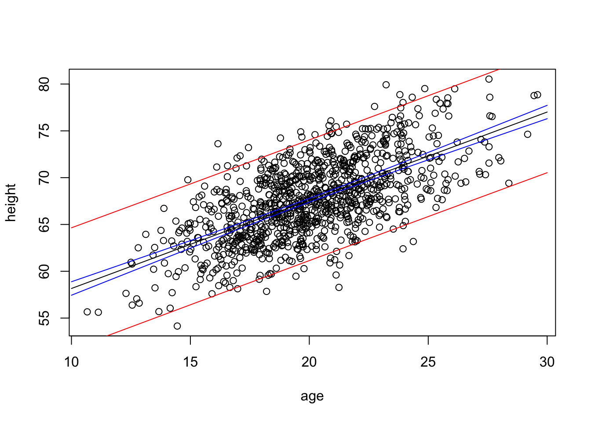
Show Code
# org1 <-ggplot(data = d, aes(x = age, y = height))g1 <- g1 +geom_point(alpha =0.5)g1 <- g1 +geom_line(data = df, aes(x = age, y = .fitted), color ="black", lwd =1)g1 <- g1 +geom_line(data = df, aes(x = age, y = c.lower), color ="blue")g1 <- g1 +geom_line(data = df, aes(x = age, y = c.upper), color ="blue")g1 <- g1 +geom_line(data = df, aes(x = age, y = p.lower), color ="red")g1 <- g1 +geom_line(data = df, aes(x = age, y = p.upper), color ="red")g1
We can use a one-liner in {ggplot} to plot the CIs, too…
g3 <-ggplot(data = d, aes(x = age, y = height)) +geom_point(alpha =0.5) +geom_smooth(method ="lm",formula = y ~ x, se =TRUE)g3
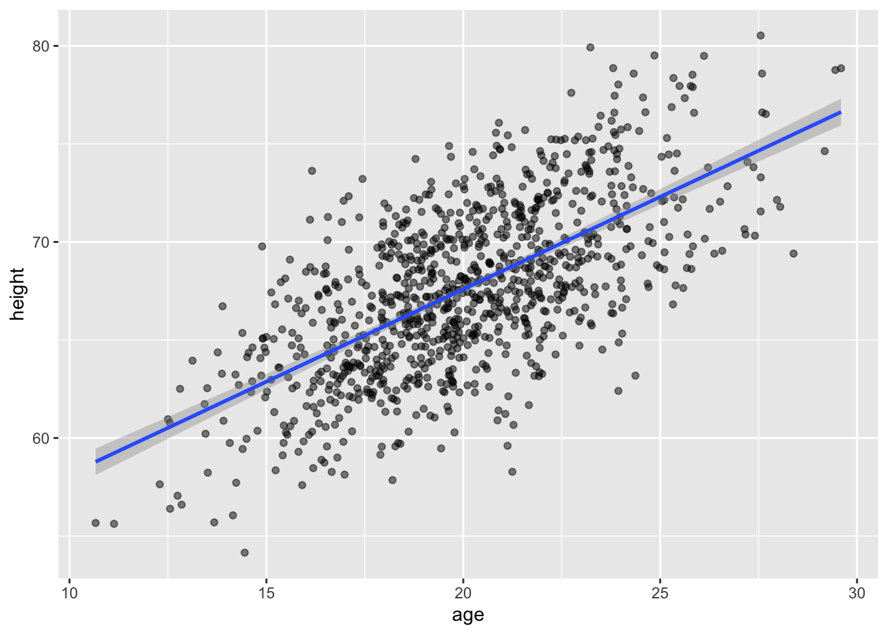
Again, in these plots, the CI band shows where the mean height (\(\hat{h}\)) is expected to fall in 95% of samples, while the PI band shows where the individual points are expected to fall 95% of the time.
CHALLENGE
For the same regression model in the challenge above, use bootstrapping with 1000 replicates to generate a quantile-based 95% CI around the estimate of the slope of the relationship. Plot the regression lines associated with each of your first 20 replicates atop a bivariate scatterplot of height ~ age.
Show Code
set.seed(1)alpha <-0.05p_lower <- alpha/2p_upper <-1- (alpha/2)boot.slope <- d |># specify modelspecify(height ~ age) |># generate bootstrap replicatesgenerate(reps =1000, type ="bootstrap") |># calculate the slope statisticcalculate(stat ="slope") |>summarize(boot.mean =mean(stat), boot.lower =quantile(stat, p_lower), boot.upper =quantile(stat, p_upper))set.seed(1)boot.slope <- d |># specify modelspecify(height ~ age) |># generate bootstrap replicatesgenerate(reps =20, type ="bootstrap")g <-ggplot(data = d, aes(x = age, y = height)) +geom_point() +geom_smooth(data = boot.slope,aes(x = age, y = height, group = replicate), method ="lm", se =FALSE, lwd =0.1)g
## `geom_smooth()` using formula = 'y ~ x'
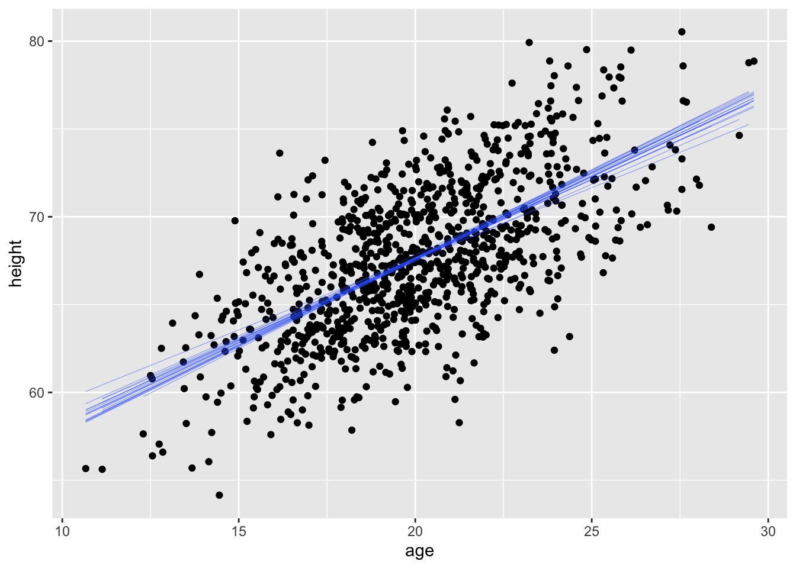
18.7 Residuals
From our various plots above, it’s clear that our model is not explaining all of the variation we see in our dataset… our y points do not all fall on the \(\hat{y}\) line but rather are distributed around it. The distance of each of these points from the predicted value for \(y\) at that value of \(x\) is known as the “residual”. We can think about the residuals as “what is left over” after accounting for the predicted relationship between \(x\) and \(y\). Residuals are often thought of as estimates of the “error” term in a regression model, and most regression analyses assume that residuals are random normal variables with uniform variance across the range of \(x\) values (more on this later). In ordinary least squares regression, the line of best fit is defined as that which minimizes the sum of the squared residuals, and the expected value for a residual is 0.
Residuals are also used to create “covariate adjusted” variables, as they can be thought of as the response variable, \(y\), with the linear effect of other predictor variables removed. We’ll return to this idea when we move on to multivariate regression.
Concept Review
Regression analysis is used to identify and explore models describing the relationship between variables of interest
We can use regression analysis…
to predict the value of a response variable given the value of one or more predictor variables
to evaluate alternative models of the relationship between a response variable and possible predictor variables
to explore the relative explanatory power of different predictor variables
Linear regression involves finding the “line of best fit” between the predictor and response variable
This means finding the coefficients \(\beta_0\) and \(\beta_1\) that define the line that minizes the sum of the squared deviations of observed and predicted values for the response variable, i.e, that minimizes \(\sum(y - \hat{y})\) where \(\hat{y}= \beta_0 + \beta_1 x\)
There are LOTS of types of regression analyses, and we will explore more of them in the modules to come [see Table 8.1 in R in Action]
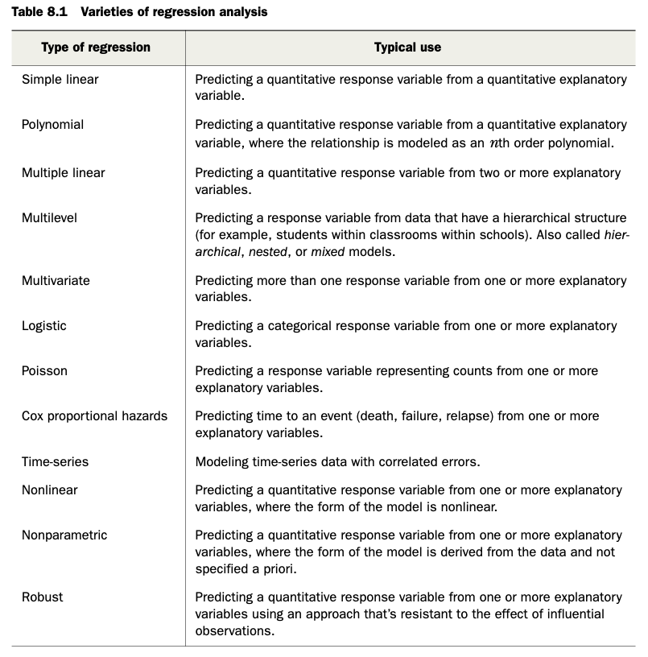
Source Code
# Introduction to Linear Modeling {#module-18}## Objectives> The objective of this module is to discuss the use of simple linear regression to explore the relationship among two continuous variables: a single predictor variable and a single response variable.## Preliminaries- Install the following package in ***R***: [{lmodel2}](https://cran.r-project.org/web/packages/lmodel2/lmodel2.pdf)- Install and load the following package in ***R***: [{broom}](https://cran.r-project.org/web/packages/broom/broom.pdf)- Load {tidyverse}, {manipulate}, {patchwork}, and {infer}```{r}#| include: false#| message: falselibrary(tidyverse)library(patchwork)library(infer)library(broom)library(manipulate)```## Covariance and CorrelationSo far, we have looked principally at single variables, but one of the main things we are often interested in is the relationships among two or more variables. **Regression modeling** is one of the most powerful and important set of tools for looking at relationships among more than one variable. With our zombie apocalypse survivors dataset, we started to do this using simple bivariate scatterplots... let's look at those data again and do a simple bivariate plot of height by weight.```{r}#| message: falsef <-"https://raw.githubusercontent.com/difiore/ada-datasets/main/zombies.csv"d <-read_csv(f, col_names =TRUE)head(d)plot(data = d, height ~ weight)```These variables clearly seem to be related to one another, in that as weight increases, height increases. There are a couple of different ways we can quantify the relationship between these variables. One is by calculating the **covariance**, which expresses how much two numeric variables "change together" and whether that change is positive or negative.Recall that the variance in a variable is simply the sum of the squared deviatiations of each observation from the mean divided by sample size (**n** for population variance or **n-1** for sample variance). Thus, sample variance is:$$var(x)=\sum\frac{(x-\bar{x})^2}{(n-1)}$$Similarly, the **covariance** is simply the product of the deviations of each of two variables from their respective means divided by sample size. Thus, for two vectors, $x$ and $y$, each of length $n$, representing two variables describing a sample...$$cov(x,y) = \sum\frac{(x-\bar{x})(y-\bar{y})}{(n-1)}$$### CHALLENGE {.unnumbered}What is the covariance between zombie apocalypse survivor weight and zombie apocalypse survivor height? What does it mean if the covariance is positive versus negative? Does it matter if you switch the order of the two variables?```{r}#| code-fold: true#| code-summary: "Show Code"#| attr.output: '.details summary="Show Output"'w <- d$weighth <- d$heightn <-length(w) # or length(h)cov_wh <-sum((w -mean(w)) * (h -mean(h))) / (n -1)cov_wh```The built-in ***R*** function `cov()` yields the same.```{r}cov(w, h)```We often describe the relationship between two variables using the **correlation** coefficient, which is a *standardized* form of the covariance that summarizes, on a scale from -1 to +1, both the strength and direction of a relationship. The correlation is simply the covariance divided by the product of the standard deviations of the two variables.$$cor(x,y)=\frac{cov(x,y)}{sd(x)sd(y)}$$### CHALLENGE {.unnumbered}Calculate the correlation between zombie apocalypse survivor weight and zombie apocalypse survivor height.```{r}#| code-fold: true#| code-summary: "Show Code"#| attr.output: '.details summary="Show Output"'sd_w <-sd(w)sd_h <-sd(h)cor_wh <- cov_wh / (sd_w * sd_h)cor_wh```Again, there is a built-in ***R*** function `cor()` which yields the same.```{r}cor(w, h)cor(w, h, method ="pearson")```This formulation of the correlation coefficient is referred to as **Pearson's product-moment correlation coefficient** and is often abbreviated as $\rho$.There are other, nonparametric forms of the correlation coefficient we might also calculate, which are based on the relationship among rank scores for the two variables:```{r}cor(w, h, method ="kendall")cor(w, h, method ="spearman")```## RegressionRegression refers to a set of tools that lets us explore the relationships between variables further. In regression analysis, we are typically identifying and exploring linear **models**, or functions, that describe the relationship between variables. There are a couple of main purposes for undertaking regression analyses:- To use one or more variables to **predict** the value of another- To develop and choose among different **models** of the relationship between variables- To do **analyses of covariation** among sets of variables to identify/explore their relative explanatory powerThe general purpose of linear regression is to come up with a model or function that estimates the expected value of one variable (a mean, a proportion, etc.), i.e., the **response** or **outcome** variable, given the particular value(s) of another variable (or set of variables), i.e., the **predictor** variable(s).We are going to start off with simple bivariate regression, where we have a single predictor and a single response variable. In our case, we may be interested in coming up with a model that estimates the expected value for zombie apocalypse survivor height (as the response variable) given zombie apocalypse survivor weight (as the predictor variable). That is, we want to explore possible functions that link these two variables and choose the best one.In general, the model for linear regression represents a dependent (or response) variable, $Y$ as a linear function of an independent (or predictor) variable, $X$.$$Y_i = \beta_0 + \beta_1 X_i + \epsilon_i$$The function has two **coefficients**. The first, $\beta_0$ is the intercept, i.e., the value of $Y$ when $X$ = 0. The second $\beta_1$ is the slope of the line describing the relationship between the predictor and response. The error term, $\epsilon_i$, is a normal random variable, $\epsilon_i \sim N(0,\sigma^2)$, with the standard deviation assumed to be constant across all values of $X$. A regression analysis calls for estimating the values of all three parameters ($\beta_0$, $\beta_1$, and the residual or error term). How this is accomplished will depend on what assumptions are employed in the analysis.Looking at our scatterplot above, it seems pretty clear that there is indeed some linear relationship among these variables, and so a reasonable function to connect height to weight should simply be some kind of line of best fit. Recall that the general formula for a line is:$$\hat{y} = slope \times x + intercept$$where $\hat{y}$ = our predicted (or expected, or mean) value for y given a particular value of x.In regression parlance...$$\hat{y_i} = \beta_1x_i + \beta_0$$Here, $\beta_1$ and $\beta_0$ are referred to as the **regression coefficients**, and it is those coefficients that our regression analysis is trying to estimate, while minimizing, according to some criterion, the error term. This process of estimation is called "fitting the model."### Ordinary Least Squares (OLS)A typical linear regression analysis further assumes that $X$, our "independent" or predictor variable, is controlled and thus measured with much greater precision than $Y$, our "dependent" or response variable. Thus the error, $\epsilon_i$ is assumed to be restricted to the $Y$ dimension, with little or no error in measuring $X$, and we employ "ordinary least squares" as our criterion for best fit.What does this mean? Well, we can imagine a family of lines with different slope ($\beta_1$) and intercept ($\beta_0$) going through any cloud of points, and one "best fit" criterion we could use is to find the line whose coefficients ($\beta_1$ and $\beta_0$, or slope and intercept) minimize the *sum of the squared deviations* of each observation in the $Y$ direction from that predicted by the line. This is the basis of **ordinary least squares** or **OLS** regression. We want to wind up with an equation that tells us how $Y$ varies in response to changes in $X$.In other words, we want to find $\beta_1$ and $\beta_0$ that minimizes...$$\sum(y_i-\hat{y})^2$$or, equivalently,$$\sum(y_i-(\beta_1 x_i + \beta_0))^2$$In terms of our variables, this is...$$\sum(height - (\beta_1 weight + \beta_0))^2$$Let's first fit such a model by hand... The first thing to do is estimate the slope, which we can do if we first "center" each of our variables by subtracting the mean from each value (essentially, this shifts the distribution to eliminate the intercept term).```{r}d <-mutate(d, centered_height = height -mean(height))d <-mutate(d, centered_weight = weight -mean(weight))p1 <-ggplot(data = d, aes(x = weight, y = height)) +geom_point()p2 <-ggplot(data = d, aes(x = centered_weight,y = centered_height)) +geom_point()p1 + p2```Once we do this, we just need to minimize...$$\sum(y_{centered} - (\beta_1 x_{centered}))^2$$We can explore finding the best slope ($\beta_1$) for this line using an interactive approach.First we define a custom function...```{r}slope.test <-function(beta1, data){ g <-ggplot(data=data, aes(x = centered_weight, y = centered_height)) g <- g +geom_point() g <- g +geom_abline(intercept =0, slope = beta1, size =1, colour="blue", alpha=1/2) ols <-sum((data$centered_height - beta1 * data$centered_weight) ^2) g <- g +ggtitle(paste("Slope = ", beta1,"\nSum of Squared Deviations = ", round(ols, 3))) g}```... that we can then play with interactively!> **NOTE:** The following code is not run... to use it, copy and paste it into ***RStudio*** and then run it.```{r}#| eval: falsemanipulate(slope.test(beta1, data=d),beta1 =slider(-1, 1, initial =0, step =0.005))```Similarly, we can calculate $\beta_1$ analytically as follows ...$$\beta_1 = cor(x,y)\frac{sd(y)}{sd(x)}=\frac{cov(x,y)}{var(x)}=\frac{SS_{XY}}{SS_X}$$We can also calculate estimates for the standard errors in our regression coefficients analytically as follows:$$SE_{\beta_1} = \sqrt\frac{\sum\epsilon_i^2}{(n-2)\sum(x_i -\bar{x})^2} = \sqrt\frac{\sum(\hat{y_i}-\bar{y})^2}{(n-2)\sum(x_i -\bar{x})^2}$$$$SE_{\beta_0} = SE_{\beta_1}\sqrt\frac{\sum{x_i}^2}{n}$$As for any standard errors, these are estimates of the *standard deviation in the sampling distribution* of the two regression coefficients.### CHALLENGE {.unnumbered}Solve for $\beta_1$ by hand...```{r}#| code-fold: true#| code-summary: "Show Code"#| attr.output: '.details summary="Show Output"'(beta1 <-cor(w, h) * (sd(h) /sd(w)))(beta1 <-cov(w,h) /var(w))(beta1 <-sum((h-mean(h))*(w-mean(w)))/sum((w-mean(w))^2))```Then, to find $\beta_0$, we can simply plug back into our original regression model. The line of best fit has to run through the centroid of our data points, which is the point determined by the mean of the $X$ values and the mean of the $Y$ values, so we can use the following:$$\bar{y}=\beta_1\bar{x}+\beta_0$$which, rearranged to solve for $\beta_0$ gives...$$\beta_0=\bar{y}-\beta_1\bar{x}$$### CHALLENGE {.unnumbered}Solve for $\beta_0$ by hand...```{r}(beta0 <-mean(h) - beta1 *mean(w))```Note that in the example above, we have taken our least squares criterion to mean minimizing the deviation of each of our $Y$ variables from a line of best fit **in a dimension perpendicular** to the $Y$ axis. In general, this kind of regression - where deviation is measured perpendicular to one of the axes - is known as **Model I** regression, and is used when the levels of the predictor variable are either measured without error (or, practically speaking, are measured with much less uncertainty than those of the response variable) or are set by the researcher (e.g., for defined treatment variables in an ecological experiment).### The `lm()` FunctionThe function `lm()` ("linear model") in ***R*** makes all of the calculations we did above for **Model I** regression very easy! Below, we pass the zombies dataframe (**d**) and variables directly to `lm()` and assign the result to an ***R*** object called **m**. We can then look at the various elements that ***R*** calculates about this model.```{r}m <-lm(height ~ weight, data = d)mnames(m) # components of the object, mm$coefficients # regression coefficientshead(m$model) # x values and fitted y values```Applying the `tidy()` function from the {broom} package to our model makes it easy to extract certain output of interest, such as beta coefficients.```{r}tidy(m)```The `glance()` function also returns other information of interest about the model.```{r}glance(m)```In {ggplot}, we can easily create a plot that adds the linear model along with confidence intervals around the estimated value of **y**, or $\hat{y}$ at each **x** by calling `geom_smooth()` with the argument `method=` specified as "lm". Those intervals are important for when we move on to talking about inference in the regression context.```{r}g <-ggplot(data = d, aes(x = weight, y = height))g <- g +geom_point()g <- g +geom_smooth(method ="lm", formula = y ~ x)g```### Alternatives to OLSThe assumption of greater uncertainty in our response variable than in our predictor variable may be reasonable in controlled experiments, but for natural observations, measurement of the $X$ variable also typically involves some error and, in fact, in many cases we may not be concered about PREDICTING $Y$ from $X$ but rather want to treat both $X$ and $Y$ as independent variables and explore the relationship between them or consider that both are dependent on some additional parameter, which may be unknown. That is, both are measured rather than "controlled" and both include uncertainty. We thus are not seeking an equation of how $Y$ varies with changes in $X$, but rather we are look for how they both co-vary in response to some other variable or process. Under these conditions **Model II** regression analysis may be more appropriate. In **Model II** approaches, a line of best fit is chosen that minimizes in some way the direct distance of each point to the best fit line. There are several different types of **Model II** regression, and which to use depends upon the specifics of the case. Common approaches are know as *major axis*, *ranged major axis*, and *reduced major axis* (a.k.a. *standard major axis*) regression.The {lmodel2} package allows us to do **Model II** regression easily (as well as **Model I**). In this package, the signficance of the regression coefficients, which we discuss below, is determined based on permutation.```{r}library(lmodel2) # load the lmodel2 package# Run the regressionmII <-lmodel2( height ~ weight,data = d,range.y ="relative",range.x ="relative",nperm =1000)mIIpar(mfrow =c(2, 2))plot(mII, "OLS")plot(mII, "MA")plot(mII, "SMA")plot(mII, "RMA")detach(package:lmodel2)```Note that, here, running `lmodel2()` and using OLS to detemine the best coefficients yields equivalent results to our Model I regression done above using `lm()`.```{r}mI <-lm(height ~ weight, data = d)summary(mI) # show lm() results# show lmodel2() OLS resultsfilter(mII$regression.results, Method =="OLS")par(mfrow =c(1, 2))plot(mII,main ="lmodel2() OLS",xlab ="weight",ylab ="height")plot(data = d, height ~ weight, main ="lm()")abline(mI, col ="red")```### CHALLENGE {.unnumbered}Using the zombie apocalypse survivors dataset, try the following...- Plot survivor height as a function of age- Derive by hand the ordinary least squares regression coefficients $\beta_1$ and $\beta_0$ for these data- Confirm that you get the same results using the `lm()` function- Repeat the analysis above for males and females separately- Do your regression coefficients differ by sex? How might you determine this?```{r}par(mfrow =c(1, 1))plot(data = d, height ~ age)head(d)beta1 <-cor(d$height, d$age) *sd(d$height) /sd(d$age)beta1beta0 <-mean(d$height) - beta1 *mean(d$age)beta0(m <-lm(height ~ age, data = d))males <-filter(d, gender =="Male")(m <-lm(height ~ age, data = males))females <-filter(d, gender =="Female")(m <-lm(height ~ age, data = females))```## Inference in Regression### Classical Theory-Based Inference {.unnumbered}Once we have our linear model and associated regression coefficients, we want to know a bit more about the model. First, we want to be able to evaluate whether there is **statistical evidence** that there is indeed a relationship between these variables. If so, then our regression coefficients can indeed allow us to estimate or predict the value of one variable given another. Additionally, we also would like to be able to extend our estimates from our sample out to the population they are drawn from. These next steps involve the process of statistical inference.The output of the `lm()` function provides a lot of information useful for inference. Run the command `summary()` on the output of `lm(data = d, height ~ weight)````{r}m <-lm(data = d, height ~ weight)summary(m)```One of the outputs for the model, seen in the 2nd to last line in the output above, is the "R-squared" value, or the **coefficient of determination**, which is a summary of the total amount of variation in the **y** variable that is explained by the **x** variable. In our regression, ~69% of the variation in zombie height is explained by zombie weight.Another output is the **standard error** of the estimate of each regression coefficient, along with a corresponding **t value** and **p value**. Recall that t statistics are calculated as the difference between an observed and expected value divided by a standard error. The p value comes from evaluating the magnitude of the t statistic against a t distribution with **n-2** degrees of freedom. That is, we can calculate p values mathematically for our statistics (the regression slope and intercept) if the sampling distribution of these statistics conform to a t distribution.As we saw above, running the `tidy()` function from the {broom} package pulls out a clean table of the relevant information.```{r}m.summary <-tidy(m)```We can confirm the t statistic and p value output by `lm()` by hand by calculating t and p based on the regression coefficient estimates and the standard errors of those estimates. The t statistic is simply the value of the estimated regression coefficient divided by the estimate of the standard error for that coefficient (i.e., $\beta/SE_\beta$)```{r}m.summary$calc.statistic <- (m.summary$estimate -0) / m.summary$std.errorm.summary$calc.p.value <-2*pt(m.summary$calc.statistic,df =nrow(d) -2,lower.tail =FALSE)# we use 2 * pt to get the 2-tailed p value# alternatively, we could do...# m.summary$calc.p.value <- pt(-1*abs(m.summary$calc.statistic),# df = nrow(d) - 2, lower.tail = TRUE) +# pt(abs(m.summary$calc.statistic), df = nrow(d) - 2,# lower.tail = FALSE)# or# m.summary$calc.p.value <- pt(-1*abs(m.summary$calc.statistic),# df = nrow(d) - 2, lower.tail = TRUE) +# (1-pt(abs(m.summary$calc.statistic), df = nrow(d) - 2,# lower.tail = TRUE))m.summary```Note that the `glance()` function also returns other information of interest about a regression model.```{r}glance(m)```We can get t distribution-based confidence intervals for our estimates easily, too, using either the by-hand approach we've used before or by using a built-in function.```{r}alpha <-0.05# extract CIs from the model with# using the results of lm()(CI <-confint(m, level =1- alpha))# using tidy()(CI <-tidy(m, conf.int =TRUE, conf.level =1- alpha))# by handlower <- m.summary$estimate -qt(1- alpha /2, df =nrow(d) -2) * m.summary$std.errorupper <- m.summary$estimate +qt(1- alpha /2, df =nrow(d) -2) * m.summary$std.errorCI <-cbind(lower, upper)rownames(CI) <-c("(Intercept)", "weight")colnames(CI) <-c(paste0(as.character(alpha/2*100), " %"),paste0(as.character((1-alpha/2) *100), " %"))CI```> **NOTE:** Remember that these mathematical methods of calculating p values and CIs are only valid if the **LINE** technical conditions for linear regression are met. These conditions are:>> - **L**inearity of the relationship between the explanatory and response variables> - **I**ndependence of observations and their residuals> - **N**ormality of the residual values of the response variable around the regression line> - **E**quality of the variance in residual values across the range of explanatory variable values### Simulation-Based Inference {.unnumbered}#### Significance of Coefficients by Permutation {.unnumbered}As we saw in [**Module 16**](#module-16), the {infer} package offers a convenient set of functions and a standard workflow for using permutation methods for statistical hypothesis testing, rather than relying on mathematical assumptions. In that module, we considered whether means, differences between means, proportions, or differences in proportions differed from what we would expect under a particular null hypothesis... and we can apply the same workflow to evaluating regression coefficients! The permutation approach lets us relax the **normality** condition of the **LINE** assumptions for linear regression. To demonstrate this process, we will run the same model of **height** ~ **weight** using the zombie apocalypse survivors dataset that we ran above:First, we run the model and pull out $\beta_1$, the regression slope, and its estimated standard error:```{r}# first define alpha, CI boundaries, and critical valuesalpha <-0.05confidence_level <-1- alphap_lower <- alpha /2p_upper <-1- (alpha /2)degrees_of_freedom <-nrow(d) -2critical_value <-qt(p_upper, df = degrees_of_freedom)# original slopeoriginal.slope <-lm(data = d, height ~ weight) |># tidy the model and add the CI based on the t distributiontidy(conf.int=TRUE, conf.level=confidence_level) |># or manually calculate the CI based on the t distributionmutate(lower = estimate - std.error * critical_value,upper = estimate + std.error * critical_value ) |>filter(term =="weight")original.slope # show model results for slope of weight```We can generate a null distribution for our slope estimates via permutation using {infer} package functions... essentially, each permutation involves randomly shuffling values of the response variable under the null hypothesis such that they are independent of the explanatory variable (and vice versa).```{r}permuted.slope <- d |># specify modelspecify(height ~ weight) |># use a null hypothesis of independencehypothesize(null ="independence") |># generate permutation replicatesgenerate(reps =1000, type ="permute") |># calculate the slope statisticcalculate(stat ="slope")head(permuted.slope) # slopes from first few permutation replicates# create confidence intervalspermuted.slope.summary <- permuted.slope |># summarize the mean (which should be very close to zero), standard error,# CI based on the SE and t distribution, and CI based on the quantile (percentile) methodsummarize(estimate =mean(stat),std.error =sd(stat),lower = estimate - std.error * critical_value,upper = estimate + std.error * critical_value,perm.lower =quantile(stat, p_lower),perm.upper =quantile(stat, p_upper) )# show summary of permuted sampling distributionpermuted.slope.summary```The `get_ci()` function from {infer} can be used to return these different types of confidence intervals, too... i.e., either based on the standard error of the permutation distribution or actual quantiles from that distribution.```{r}get_ci(permuted.slope, level =1- alpha, type ="percentile")get_ci(permuted.slope, level =1- alpha, type ="se",point_estimate =pull(permuted.slope.summary, estimate))```We can also visualize the null distribution of slope coefficients based on permutation and superimpose our actual slope coefficient.```{r}# plot the null distribution based on permutationhist(permuted.slope$stat, main="Histogram of Permuted\nSlope Values",xlab ="Slope Coefficient")# or using `visualize()` from {infer}visualize(permuted.slope) +shade_p_value(obs_stat = original.slope$estimate, direction ="two_sided")```Finally, to determine the two-sided p value associated with our observed slope coefficient, we determine the proportion of permuted simulations that yielded a slope estimate as great or greater than the the one based on our original data:```{r}p.value <- permuted.slope |># add a column of the absolute value of the slopemutate(abs_stat=abs(stat)) |># calculate a summary statistic as the proportion of cases where the# absolute value of the permuted slope is greater than or equal to the # absolute value of the observed slopesummarize(estimate =mean(abs_stat >=abs(pull(original.slope, estimate))) )p.value# the function `get_p_value()` returns this value directly...(p.value <- permuted.slope |>get_p_value(obs_stat = original.slope$estimate, direction="two_sided"))```#### CIs for Coefficients by Bootstrapping {.unnumbered}We can also use the {infer} package to generate CIs around our regression coefficient estimates using bootstrapping.```{r}boot.slope <- d |># specify modelspecify(height ~ weight) |># generate bootstrap replicatesgenerate(reps =1000, type ="bootstrap") |># calculate the slope statisticcalculate(stat ="slope")head(boot.slope) # slopes from first few bootstrap replicates# create confidence intervals for regression coefficientsboot.slope.summary <- boot.slope |># summarize the mean, standard error, CI based on the SE and t distribution,# and CI based on the quantile (percentile) methodsummarize(estimate =mean(stat),std.error =sd(stat),lower = estimate - std.error * critical_value,upper = estimate + std.error * critical_value,boot.lower =quantile(stat, p_lower),boot.upper =quantile(stat, p_upper) )# show summary of bootstrap sampling distributionboot.slope.summary```Again, the `get_ci()` function from {infer} can be used to return these different types of confidence intervals...```{r}CI.percentile <-get_ci(boot.slope, level =1- alpha, type ="percentile")CI.theory <-get_ci(boot.slope, level =1- alpha, type ="se",point_estimate =pull(boot.slope.summary, estimate))```We can also easily visualize the sampling distribution (and CI) based on bootstrapping.```{r}# plot the sampling distribution for based on bootstrapping plus a CIhist(boot.slope$stat, main ="Histogram of Bootstrapped\nSlope Values",xlab ="Slope Coefficient")abline(v = CI.percentile)# or...visualize(boot.slope) +shade_ci(endpoints = CI.percentile)```## Interpreting Regression ResultsAs shown above, estimating our regression coefficients is pretty straightforward. But what do they mean? How do we interpret them?- The intercept, $\beta_0$, is the PREDICTED value of $y$, our response variable, when the value of $x$, our explanatory variable, is zero.- The slope, $\beta_1$ is EXPECTED CHANGE in units of $y$ for every 1 unit of change in $x$.- The overall equation allows us to calculate PREDICTED values of $y$ for new observations of $x$. We can also calculate CONFIDENCE INTERVALS (CIs) around the predicted mean value of $y$ for each value of $x$ (which addresses our uncertainly in the estimate of the mean), and we can get PREDICTION INTERVALS (PIs) around our prediction (which gives the range of actual values of $y$ that we might expect to see at a given value of $x$). That is, for each value of $x$, we can calculate a CI, which is the the range of values into which $\hat{y}$ is expected to fall 95% of the time, and a PI, which is the range of y values into which 95% of predicted individual y values are expected to fall.### CHALLENGE {.unnumbered}- If zombie apocalypse survivor weight is measured in *pounds* and zombie apocalypse survivor height is measured in *inches*, what is the expected height of a survivor weighing 150 pounds?```{r}#| code-fold: true#| code-summary: "Show Code"#| attr.output: '.details summary="Show Output"'beta0 <- m.summary |>filter(term =="(Intercept)") |>pull(estimate)beta1 <- m.summary |>filter(term =="weight") |>pull(estimate)(h.hat <- beta1 *150+ beta0)```- What is the predicted difference in height between a survivor weighing 180 and 220 pounds?```{r}#| code-fold: true#| code-summary: "Show Code"#| attr.output: '.details summary="Show Output"'(h.hat.difference <- (beta1 *220+ beta0) - (beta1 *180+ beta0))```### Predicted Values {.unnumbered}The `predict()` function allows us to generate predicted (i.e., $\hat{y}$) values for a vector of values of **x**. Note the structure of the 2nd argument in the function, `newdata=`... it has to be a data frame and include the variable name(s) we are going to use to predict **y** on the basis of. Here, we pass it a vector of actual **x** values.```{r}m <-lm(data = d, height ~ weight)y.hat <-predict(m, newdata =data.frame(weight = d$weight))df <-data.frame(cbind(d$weight, d$height, y.hat))names(df) <-c("x", "y", "yhat")head(df)```The `augment()` function from {broom} also generates comparable predicted or "fitted" values for a model. With default arguments, it generates .fitted and .resid values for the original data and can also calculate .se.fit values (standard errors around the fitted values) by setting `se_fit=TRUE` (it is `FALSE` by default). With the `newdata=` argument, it generates .fitted values for novel data. As for `predict()`, the `newdata=` argument has to be a data frame and include the predictor variable name(s).```{r}df <-augment(m, se_fit =TRUE)head(df)``````{r}g <-ggplot(data = df, aes(x = weight, y = .fitted))g <- g +geom_point(size =0.25)g <- g +geom_point(aes(x = weight, y = height), color ="red")g <- g +geom_segment(aes(x = weight, y = .fitted, xend = weight, yend = height),alpha =0.25)g```Each vertical line in the figure above represents a **residual**, the difference between the observed and the fitted or predicted value of $y$ ($\hat{y}$) at the given $x$ value.### Confidence Intervals around Predicted Means {.unnumbered}The `predict()` function also allows us to easily generate *confidence intervals* around our predicted $\hat{y}$ values.```{r}ci <-predict(m, newdata =data.frame(weight =150),interval ="confidence", level =1- alpha) # for a single valuecici <-predict(m, newdata=data.frame(weight=d$weight),interval ="confidence", level =1- alpha) # for a vector of valuesci <-data.frame(ci)ci <-cbind(df$weight, ci)names(ci) <-c("weight", "c.fit", "c.lwr", "c.upr")g <-ggplot(data = df, aes(x = weight, y = height))g <- g +geom_point(alpha =0.5)g <- g +geom_line(data = ci, aes(x = weight, y = c.fit),color ="black")g <- g +geom_line(data = ci, aes(x = weight, y = c.lwr),color ="blue")g <- g +geom_line(data = ci, aes(x = weight, y = c.upr),color ="blue")g```This can be also be done by hand using the data from the `augment()`ed model:```{r}df <- df |># calculate a confidence interval for the predicted valuesmutate(c.lwr = .fitted -qt(1-alpha/2, nrow(df) -2) * .se.fit,c.upr = .fitted +qt(1-alpha/2, nrow(df) -2) * .se.fit )head(df)g <-ggplot(data = df, aes(x = weight, y = height))g <- g +geom_point(alpha =0.5)g <- g +geom_line(aes(x = weight, y = .fitted), color ="black")g <- g +geom_line(aes(x = weight, y = c.lwr), color ="blue")g <- g +geom_line(aes(x = weight, y = c.upr), color ="blue")g```### Prediction Intervals for Individual Responses {.unnumbered}The `predict()` function also allows us to easily generate *prediction intervals* for the range of possible values of individual observations of $y$ (rather than the 95% CI around $\hat{y}$ at each $x$.```{r}pi <-predict(m, newdata =data.frame(weight =150),interval ="prediction", level=0.95) # for a single valuepipi <-predict(m, newdata =data.frame(weight = d$weight),interval="prediction",level=0.95) # for a vector of valuespi <-data.frame(pi)pi <-cbind(d$weight, pi)names(pi) <-c("weight", "p.fit", "p.lwr", "p.upr")g <- g +geom_line(data=pi, aes(x=weight, y=p.lwr), color ="red")g <- g +geom_line(data=pi, aes(x=weight, y=p.upr), color ="red")g```Again, this can be also be done by hand using the data from the `augment()`ed model:```{r}sd <-glance(m) |>pull(sigma) # sd deviation of residualsdf <- df |># calculate a confidence interval for the predicted valuesmutate(se.prediction =sqrt(sd ^2+ .se.fit ^2),p.lower = .fitted -qt(1-alpha/2, nrow(df) -2) * se.prediction,p.upper = .fitted +qt(1-alpha/2, nrow(df) -2) * se.prediction )g <-ggplot(data = df, aes(x = weight, y = height))g <- g +geom_point(alpha =0.5)g <- g +geom_line(aes(x = weight, y = .fitted), color ="black")g <- g +geom_line(aes(x = weight, y = c.lwr), color ="blue")g <- g +geom_line(aes(x = weight, y = c.upr), color ="blue")g <- g +geom_line(aes(x = weight, y = p.lower), color ="red")g <- g +geom_line(aes(x = weight, y = p.upper), color ="red")g```### CHALLENGE {.unnumbered}Construct a linear model using `lm()` for the regression of zombie apocalypse survivor **height** on **age** and predict the mean height ($\hat{h}$). Then, use the `augment()` and `mutate()` or `predict()` functions to calculate the t distribution-based 95% confidence interval (CI) around the predicted mean height and the 95% prediction interval (PI) for height for a vector of zombie ages, `v <- seq(from=10, to=30, by=1)`. Finally, plot your points, your regression line, and lines for the lower and upper limits of the CI and of the PI.> **NOTE:** The `augment()` and `predict()` functions work similarly, but whereas `predict()` returns a vector of fitted $y$ values for each $x$ value in **newdata**, `augment()` will return a dataframe of $x$s, fitted $y$s, and standard errors for the fitted $y$s. Helpfully, if the **newdata** argument is left out for `augment()`, the function will use the original dataset and simply add in the new fitted $y$, standard errors, etc.```{r}#| code-fold: true#| code-summary: "Show Code"#| attr.output: '.details summary="Show Output"'alpha <-0.05v <-seq(from =10, to =30, by =1)m <-lm(data = d, height ~ age)sd <-glance(m) |>pull(sigma)df <-augment(m, newdata =data.frame(age = v), se_fit =TRUE) |># add CImutate(c.lower = .fitted -qt(1-alpha/2, nrow(d) -2) * .se.fit,c.upper = .fitted +qt(1-alpha/2, nrow(d) -2) * .se.fit ) |># add PImutate(se.prediction =sqrt(sd ^2+ .se.fit ^2),p.lower = .fitted -qt(1-alpha/2, nrow(d) -2) * se.prediction,p.upper = .fitted +qt(1-alpha/2, nrow(d) -2) * se.prediction )# alternatively...# ci <- predict(m, newdata = data.frame(age = v),# interval = "confidence", level = 1 - alpha)# pi <- predict(m, newdata = data.frame(age = v),# interval = "prediction", 1 - alpha)plot(data=d, height ~ age)lines(x = df$age,y = df$.fitted,col ="black")lines(x = df$age,y = df$c.lower,col ="blue")lines(x = df$age,y = df$c.upper,col ="blue")lines(x = df$age,y = df$p.lower,col ="red")lines(x = df$age,y = df$p.upper,col ="red")# org1 <-ggplot(data = d, aes(x = age, y = height))g1 <- g1 +geom_point(alpha =0.5)g1 <- g1 +geom_line(data = df, aes(x = age, y = .fitted),color ="black", lwd =1)g1 <- g1 +geom_line(data = df, aes(x = age, y = c.lower),color ="blue")g1 <- g1 +geom_line(data = df, aes(x = age, y = c.upper),color ="blue")g1 <- g1 +geom_line(data = df, aes(x = age, y = p.lower),color ="red")g1 <- g1 +geom_line(data = df, aes(x = age, y = p.upper),color ="red")g1# org2 <-ggplot() +geom_point(data = d, aes(x = age, y = height), alpha =0.5) +geom_line(data = df, aes(x = age, y = .fitted), color ="black",lwd =1) +geom_ribbon(data = df, aes(x = age, ymin = c.lower, ymax = c.upper),alpha =0.2, fill ="blue" ) +geom_ribbon(data = df, aes(x = age, ymin = p.lower, ymax = p.upper),alpha =0.2, fill ="red" )g2```We can use a one-liner in {ggplot} to plot the CIs, too...```{r}g3 <-ggplot(data = d, aes(x = age, y = height)) +geom_point(alpha =0.5) +geom_smooth(method ="lm", formula = y ~ x, se =TRUE)g3```Again, in these plots, the CI band shows where the mean height ($\hat{h}$) is expected to fall in 95% of samples, while the PI band shows where the individual points are expected to fall 95% of the time.### CHALLENGE {.unnumbered}For the same regression model in the challenge above, use bootstrapping with 1000 replicates to generate a quantile-based 95% CI around the estimate of the slope of the relationship. Plot the regression lines associated with each of your first 20 replicates atop a bivariate scatterplot of **height** ~ **age**.```{r}#| code-fold: true#| code-summary: "Show Code"#| attr.output: '.details summary="Show Output"'set.seed(1)alpha <-0.05p_lower <- alpha/2p_upper <-1- (alpha/2)boot.slope <- d |># specify modelspecify(height ~ age) |># generate bootstrap replicatesgenerate(reps =1000, type ="bootstrap") |># calculate the slope statisticcalculate(stat ="slope") |>summarize(boot.mean =mean(stat),boot.lower =quantile(stat, p_lower),boot.upper =quantile(stat, p_upper) )set.seed(1)boot.slope <- d |># specify modelspecify(height ~ age) |># generate bootstrap replicatesgenerate(reps =20, type ="bootstrap")g <-ggplot(data = d, aes(x = age, y = height)) +geom_point() +geom_smooth(data = boot.slope, aes(x = age,y = height, group = replicate), method="lm", se =FALSE, lwd=0.1)g```## ResidualsFrom our various plots above, it's clear that our model is not explaining all of the variation we see in our dataset... our **y** points do not all fall on the $\hat{y}$ line but rather are distributed around it. The distance of each of these points from the predicted value for $y$ at that value of $x$ is known as the "residual". We can think about the residuals as "what is left over" after accounting for the predicted relationship between $x$ and $y$. Residuals are often thought of as estimates of the "error" term in a regression model, and most regression analyses assume that residuals are random normal variables with uniform variance across the range of $x$ values (more on this later). In ordinary least squares regression, the line of best fit is defined as that which minimizes the sum of the squared residuals, and the expected value for a residual is 0.Residuals are also used to create "covariate adjusted" variables, as they can be thought of as the response variable, $y$, with the linear effect of other predictor variables removed. We'll return to this idea when we move on to multivariate regression.```{r include=FALSE}detach(package:manipulate)detach(package:broom)detach(package:infer)detach(package:patchwork)detach(package:tidyverse)```---## Concept Review {.unnumbered}- Regression analysis is used to identify and explore models describing the relationship between variables of interest- We can use regression analysis... - to **predict** the value of a response variable given the value of one or more predictor variables - to evaluate alternative **models** of the relationship between a response variable and possible predictor variables - to explore the relative **explanatory power** of different predictor variables- Linear regression involves finding the "line of best fit" between the predictor and response variable- This means finding the coefficients $\beta_0$ and $\beta_1$ that define the line that minizes the sum of the squared deviations of observed and predicted values for the response variable, i.e, that minimizes $\sum(y - \hat{y})$ where $\hat{y}= \beta_0 + \beta_1 x$- There are LOTS of types of regression analyses, and we will explore more of them in the modules to come [see Table 8.1 in ***R in Action***]```{r}#| echo: false#| out-width: "70%"knitr::include_graphics("img/RinActionTable8.1.png")```